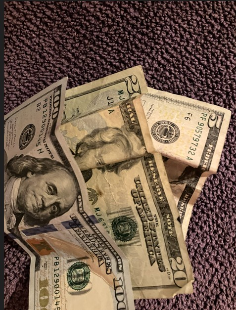

Making and maintaining a budget has been one of my long‑term passions. I enjoy finding ways to stretch what I have as far as possible. One strategy I’ve used over the years is setting a strict spending limit when I go to local festivals, such as Art in the Park. I bring $200 with me to spend, but I leave $40 in the car so I have a small backup amount without carrying a card or check, which helps me avoid overspending.
